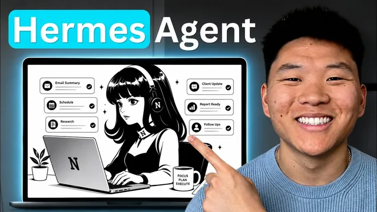

14분이면 끝나는 개인 Hermes 세팅 (VPS·맥미니 불필요)

원본 영상 보기 →
- 관리형 에이전트는 "서버 관리"라는 진입장벽을 통째로 없애요
- API 키 대신 기존 ChatGPT/Claude 구독을 연결하면 비용 구조가 바뀌어요
- 외부 도구 연결은 "환경변수 추가 → 재시작"이 사실상 정해진 절차예요
한 줄 요약
Nate가 로컬 설치나 VPS 없이 Hostinger의 관리형(managed) Hermes(허미스) 에이전트로 개인 AI 에이전트를 14분 만에 세팅하는 과정을 처음부터 끝까지 보여줘요. Telegram(텔레그램) 연동, ChatGPT 구독 연결, 대시보드 기능, 환경변수로 외부 API(Tavily) 붙이기까지 다룹니다.
전체 내용 정리
관리형 Hermes 에이전트 vs VPS Hermes 에이전트, 무엇이 다를까요
Nate는 먼저 두 방식의 차이를 정리해요.
관리형(managed) 에이전트는 월 약 6달러부터 시작하고, 구매하거나 유지할 서버가 없습니다. 원클릭 설치에 Docker(도커)·SSH·ENV 파일을 전혀 만질 필요가 없어요. Telegram이 처음부터 연결돼 있고 CLI 접근도 제공됩니다. 대신 앱 하나를 스핀업하는 개념이라 확장성은 떨어지죠.
VPS(가상 사설 서버) 방식은 가격이 조금 더 비싸고 서버를 직접 사서 유지해야 해요. 업데이트·백업·방화벽 규칙·컨테이너 상태를 전부 본인이 책임져야 합니다. 그 대신 root 전체 접근 권한과 설정 자유도를 얻고, 한 서버에 Hermes 에이전트 여러 개와 n8n 등 다른 서비스까지 함께 올려 확장할 수 있어요.
Nate의 권장은 명확합니다. 서버에 여러 서비스를 올려 키울 계획이 아니라면 관리형으로 시작하라는 거예요. 이 편이 대부분의 사용자(약 98%)에게 충분하다고 말합니다.
Hostinger에서 Hermes 에이전트 생성하고 모델 연결하기
hostinger.com에 가입해 HPanel(H패널)에 들어가면 왼쪽에 AI Agents 메뉴가 있어요. Open Claw(오픈클로), Hermes, N8N 중에서 고를 수 있습니다.
Hermes Agent를 클릭한 뒤 상단에서 get new app → get started → 원하는 플랜 선택으로 진행하면 돼요.
플랜 선택 시 팁이 있습니다. AI 크레딧은 끄는 것을 Nate가 권장해요(어차피 안 쓰게 된다고 하네요). 웹 스크래핑 크레딧 1,000개 무료 옵션과 에이전트 전용 이메일 주소를 만들어주는 Agentic Mail 옵션도 고를 수 있고요.
영상 설명란 링크로 들어가면 별도 랜딩 페이지가 열리고, 연간 플랜(12개월 또는 24개월)일 때 쿠폰코드 Nate Herc로 10% 할인을 받을 수 있습니다. 제품은 완전히 동일하고 경로만 다르다고 하네요.
다음은 모델 연결이에요. Hermes Agent는 그 자체로 AI 모델이 아니라 Claude(클로드)·GPT·Gemini(제미나이) 같은 모델을 감싸는 하네스(harness)입니다.
API 키를 직접 넣을 수도 있지만, Nate는 ChatGPT 구독을 연결하라고 권해요. 추론량이 훨씬 많고 훨씬 저렴하기 때문이죠. 체크박스를 켜고 continue를 누른 뒤 안내 링크에서 ChatGPT 계정에 로그인하고 코드를 붙여넣으면 "Codex로 로그인됨" 표시가 뜨고, 약 10초 뒤 연결이 완료됩니다.
Telegram 봇 연결: BotFather와 user info bot
Telegram을 설치한 뒤 BotFather(봇파더)를 검색해요. BotFather는 새 봇을 만들어주는 공식 봇입니다.
/newbot 명령을 입력하고 봇 이름을 정하세요(Nate는 "managed Hermes demo"로 지정했어요). 그다음 username을 정하는데, 이 값은 완전히 고유해야 하고 반드시 끝이 bot으로 끝나야 합니다.
등록이 끝나면 access token(액세스 토큰)이 발급되고, 이 토큰을 복사해 Hostinger 쪽에 붙여넣고 continue를 누르면 돼요.
이어서 Telegram user ID가 필요합니다. Telegram에서 user info bot을 검색해 /start를 보내면 내 ID가 표시되고, 그 값을 복사해 Hostinger에 붙여넣고 continue를 누르면 끝이에요.
봇 활성화 과정에서 당황하지 마세요
BotFather에서 방금 만든 에이전트 이름을 클릭하면 그 봇과의 채팅창으로 들어가고, start를 누르면 활성화가 시작됩니다.
여기서 헷갈리는 지점이 있어요. "hello"라고 입력해도 아무 반응이 없고, 평소 뜨는 "typing" 표시조차 나타나지 않거든요. 아직 세팅이 끝나지 않았기 때문이며, 뭔가 잘못한 게 아니니 당황할 필요가 없다고 Nate는 강조합니다.
왼쪽의 finish setup을 누르면 설정이 적용되고, 사용할 AI 모델을 고르는 화면이 나와요. Codex(OpenAI) 구독을 연결했으므로 지금은 GPT 계열 모델만 선택할 수 있고, Nate는 "Soul"(GPT 5.6 Soul)을 골라 continue를 누릅니다. 이 모델은 나중에 대시보드에서 언제든 바꿀 수 있어요.
완료 후 open app을 누르면 Hostinger가 호스팅하는 Hermes 대시보드가 열립니다. 대시보드에서 hello를 보내면 이제 정상적으로 응답이 오고, Telegram에서 hello를 보내도 typing 표시와 함께 답이 와요.
Hermes 대시보드에서 할 수 있는 것
대화는 두 개의 스레드로 나뉘어요. 대시보드 스레드와 Telegram 스레드가 따로 존재하고, 어느 채널로 말하고 있는지 구분되며, Telegram 채팅은 폰에도 그대로 동기화됩니다.
대시보드의 Tasks에서는 예약 작업(scheduled job)을 만들고 관리할 수 있어요. Claude나 Grokbot, Codex의 routines(루틴)와 비슷한 개념입니다.
Kanban(칸반) 보드에서는 에이전트와 여러 하위 에이전트가 만든 작업이 카드로 쌓이고, 담당자와 상태를 확인할 수 있어요.
Skills(스킬)에는 Claude Code, Codex, computer use(컴퓨터 제어), creative skills, email, GitHub, media 등이 기본 탑재돼 있고 켜고 끌 수 있습니다. 직접 스킬을 추가하려면 이름과 카테고리를 정하고 YAML front matter(YAML 머리말)를 붙여넣으면 돼요. Nate는 예시로 Claude 스킬 폴더에 있던 Excalidraw(엑스칼리드로) 다이어그램 스킬 내용을 복사해 붙여넣고 이름을 지정한 뒤 추가하는 모습을 보여줍니다. 메타데이터는 결국 name과 "언제 이 스킬을 쓰는지"에 대한 설명이에요.
Memory(메모리) 영역에는 노트, 사용자 프로필(user profile), 에이전트 소울(agent soul), 프로젝트 컨텍스트(project context)를 담을 수 있고, 이 밖에 spaces와 개별 프로필도 여기서 관리됩니다.
환경변수로 외부 도구(Tavily) 붙이기
외부 API를 붙이려면 HPanel → Hermes agents → 해당 앱 관리 → environment(환경변수)로 들어가요.
Nate는 Tavily(태빌리, 웹 리서치 API)를 예로 듭니다. 에이전트에게 "Tavily로 voice AI 에이전트를 리서치해줘"라고 하면 키가 없어서 실패하는데요. 재미있는 건 Hermes가 스스로 웹 검색으로 작동 방식을 파악한 뒤, "HPanel 환경변수에 TAVILY_API_KEY라는 이름으로 키를 추가하라"고 안내해준다는 점이에요.
안내받은 이름 그대로 환경변수 이름을 넣고, 값에는 Tavily에서 복사한 API 키를 넣은 뒤 add → apply changes로 저장합니다. 저장하면 대시보드가 리셋되므로 다시 로그인해야 하는데, 비밀번호는 Hermes 대시보드의 dashboard 버튼을 눌러 복사할 수 있고 기존 채팅은 그대로 유지돼요.
키를 넣은 뒤 재시도하면 가끔 "Tavily API key가 보이지 않는다"는 응답이 옵니다. 이럴 때는 대시보드의 restart 버튼으로 Hermes 에이전트를 재시작하고 다시 로그인한 뒤 재시도하면 소스와 함께 정상적으로 결과가 나와요.
실제로 Tavily 크레딧이 0/1,000에서 5 사용으로 바뀌며, 에이전트가 진짜로 그 계정을 사용했음이 확인됩니다.
세팅 직후 추천: grill me 스킬로 에이전트에게 나를 학습시키기
Nate가 세팅 직후 가장 먼저 하는 일은 에이전트에게 자기 자신에 대한 맥락을 채워주는 거예요.
그는 무료 Skool(스쿨) 커뮤니티(설명란 링크)에서 "grill me"(그릴 미) 스킬을 받으라고 권합니다. 이 스킬은 에이전트가 사용자를 인터뷰해서 그 사람과 비즈니스를 파악하게 해줘요.
이미 AI 운영체제(AI OS)를 GitHub에 백업해둔 사람이라면, Hermes 에이전트에게 그 repo를 주고 "이 repo를 읽고 내 파일 구조와 프로젝트, 비즈니스 맥락을 파악해"라고 시키면 됩니다.
그런 자료가 없거나 더 보강하고 싶으면 grill me 스킬을 앞서와 같은 방식(YAML 붙여넣기)으로 추가한 뒤, 채팅에서 "grill me 스킬을 나한테 써서 내가 뭘 하는지 파악해줘"라고 요청하면 돼요. 영상에서는 받아쓰기가 "grooming"으로 잘못 인식되는 해프닝도 나옵니다.
Cloud Code를 써본 사람이라면 익숙하듯, Hermes도 사고 과정(chain of thought)을 그대로 보여주는데요. 특히 Telegram에서 이 흐름을 보는 게 장점이라고 Nate는 말해요.
실행하면 에이전트가 grill me 스킬을 찾아 "brainstorm"이라는 새 프로젝트를 시작하고 대화 내용을 메모리에 저장합니다. grill me를 반복할수록 에이전트가 사용자에 대해 더 똑똑해지죠.
Nate는 이번 영상을 세팅 위주로 짧게 가져가려 했다며, 더 깊은 활용법을 원하면 댓글로 알려달라고 마무리해요.
핵심 인사이트
- 관리형 에이전트는 "서버 관리"라는 진입장벽을 통째로 없애요: Docker·SSH·ENV 파일·방화벽 규칙을 다룰 필요 없이 앱 하나 스핀업하듯 개인 AI 에이전트를 가질 수 있습니다. 대가로 root 제어와 확장성을 포기하지만, 한 서버에 여러 서비스를 올릴 계획이 없다면 이 트레이드오프는 대부분에게 이득이죠.
- API 키 대신 기존 ChatGPT/Claude 구독을 연결하면 비용 구조가 바뀌어요: 토큰당 과금이 아니라 정액 구독의 추론량을 그대로 쓰므로 훨씬 저렴하고 지출이 예측 가능해집니다. 개인용 에이전트를 상시 켜둘 때 이 차이가 크거든요.
- 외부 도구 연결은 "환경변수 추가 → 재시작"이 사실상 정해진 절차예요: 키를 넣어도 즉시 인식되지 않는 경우가 흔해 재시작이 필수처럼 붙습니다. 그리고 에이전트 자체가 "무슨 키를 어디에 어떤 이름으로 넣어라"까지 안내해준다는 점이 비개발자에게 실질적인 도움이 돼요.
- 세팅보다 중요한 건 맥락 주입이에요: grill me 같은 인터뷰 스킬이나 내 정보가 담긴 GitHub repo를 먼저 넣어 나와 비즈니스를 학습시켜야 에이전트가 실제 업무에서 쓸모 있어집니다. 빈 에이전트는 그냥 챗봇일 뿐이죠.
오늘 당장 해볼 것
- hostinger.com에 가입해 HPanel 왼쪽 AI Agents → Hermes Agent → get new app으로 관리형 에이전트를 하나 만들어보세요. 플랜 선택 시 AI 크레딧은 끄시고, 연간 플랜이면 쿠폰코드 Nate Herc로 10% 할인을 적용하면 됩니다.
- 모델 연결 단계에서 API 키 대신 "ChatGPT 구독 사용" 체크박스를 선택해 Codex(OpenAI) 구독으로 연결하세요. 그리고 Telegram BotFather에서
/newbot으로 봇을 만들어, access token과 user info bot에서 확인한 user ID를 Hostinger에 붙여넣으시면 돼요. - 대시보드가 열리면 곧바로 grill me 스킬(또는 내 정보가 담긴 GitHub repo)을 넣고 "이걸로 나와 내 비즈니스를 파악해"라고 시켜 맥락부터 채우세요. 외부 도구가 필요하면 HPanel 환경변수에 API 키를 추가한 뒤 에이전트를 한 번 재시작하시고요.